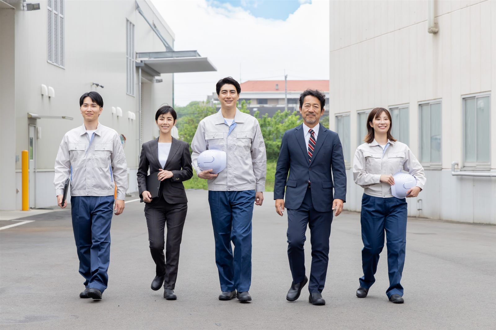

01
1956年創業
昭和31年から、埼玉の設備工事ひとすじ
埼玉県内各地の設備工事を請け負ってきました。受け継いだ技術を、次の世代に渡していく会社です。

RECRUITさいたま市西区の工務店｜スタッフ募集中
昭和31年創業、さいたま市北区の設備屋。国や県、さいたま市の建物の空調・給排水・消防設備を手がけています。先輩について、段取りから覚える現場監督・配管工を募集しています。
ABOUT US
道路の下の水道管から建物に水を引き込み、使った水を下水へ流す。新鮮な空気を取り入れて、過ごしやすい温度に保つ。災害のときに使う屋内消火栓を整える。飯沼工務店の仕事は、建物の中の「当たり前」をつくる設備工事です。
さいたま新都心バスターミナルや県立の特別支援学校、市の体育館など、毎日たくさんの人が使う建物が現場です。自分が関わった建物の前を、家族と通る日が来ます。
WHY WORK WITH US
01 / 05
01
1956年創業
埼玉県内各地の設備工事を請け負ってきました。受け継いだ技術を、次の世代に渡していく会社です。
02
3名
社員8名のうち、1級管工事施工管理技士が3名。はじめは先輩社員が必ず付いて、現場を一緒に回ります。
03
主な取引先は国土交通省関東地方整備局、埼玉県、さいたま市、さいたま市水道局、埼玉県住宅供給公社です。
04
被災した公営住宅の修繕と復旧に貢献し、埼玉県住宅供給公社から感謝状をいただきました。
05
完全週休2日制で、8:00〜17:15。有給休暇は入社3か月で付きます。勤続3年以上で退職金もあります。
WORK
はじめは先輩社員が必ず付きます。現場で手を動かしながら、少しずつ任される範囲を広げていきます。
INTERVIEW
※掲載例です。実際の社員の方への取材をもとに制作します。
ENTRY本社で話を聞くだけでも大丈夫です
CAREER
見習いから、現場をまとめる施工管理技士へ。資格を持った先輩が3名、すぐ近くにいます。
REQUIREMENTS
募集職種
管工事の施工管理（新卒・未経験・経験者）
給与
新卒：月給20万円〜24万円
応募資格
未経験・配管工：44歳以下
勤務地
本社（さいたま市北区宮原町）と埼玉県内の工事現場
ENTRY本社で話を聞くだけでも大丈夫です
FAQ
大丈夫です。はじめは先輩社員が必ず付き、材料の運搬や工事写真の撮影から始めます。名前を覚えるところからで問題ありません。
土・日・祝日が休みの完全週休2日制です。有給休暇も入社3か月で付きます。
埼玉県内です。国や県、さいたま市の公共施設や、県営住宅などが主な現場です。
Join our team
Grow with us.


Build with us.
まずは宮原町の本社で、
設備の仕事の話を聞いてみませんか。
Join our team.
いきなり履歴書を送らなくても大丈夫です。現場監督と配管工の1日がどんなものか、先輩から直接聞いてみてください。
お電話でも受け付けています 048-663-3465
PROPOSAL
株式会社飯沼工務店様の実際の情報・写真で制作します。施工実績の更新は「じーむれす」で写真を送るだけです。
12月末までのお申し込み・先着3社様限定
実績づくりのための特別価格です。
LINEなら、友だち追加して「レポート見ました」と送るだけでOKです。ご連絡いただいても、無理な営業はいたしません。気になる点だけのご質問も歓迎です。
デモ制作：A-SHOP／じーむれす（担当 大瀧雄真） ※このサイトはご提案用のデモで、検索エンジンには表示されません。